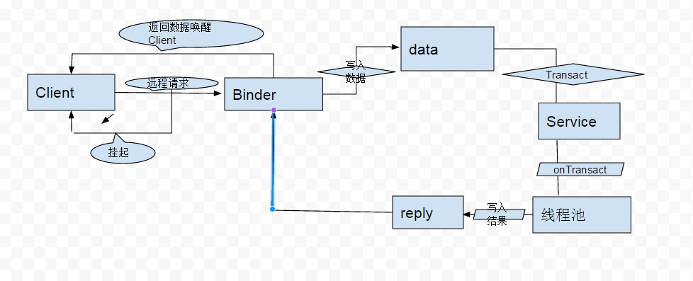

《Android艺术探索》读书笔记 第二章. IPC
IPC 简介
- 线程是CPU调度的最小单元
- IPC指进程间通信，Binder是Android中特色的进程间通信方式
Android中的多进程
Android多进程的启动
- 给四大组件设置指定android:process = “:remote”属性启动多进程
- 进程以:开头属于当前应用的私用进程，其他应用的组件不可以和它跑在同一个进程中，进程名不以:开头进程属于全局进程，其他应用通过shareUID可以和他跑在同一个进程，两个应用通过ShareUID跑在一个进程除了uid要一致还要签名一致。
Android 在多进程中通过内存共享数据，都会失败，在多进程模式中，不同进程的组件会有不同的虚拟机，不同的内存空间以及不同的Application.
- Android多进程带来的问题
- 静态成员或者单例模式失效
- 线程同步机制失效
- SharedPreference的读写XML可靠性下架
- Application会多次创建
Android中IPC基础概念
- 序列化和反序列化
- 静态成员变量属于类不属于对象，所以不能序列化，用transient修饰的成员变量也不能序列化
- 序列化前和序列化后对象内容相同，但是产生了两个对象
- Serializable是java序列化接口，用I/O操作，开销大，使用简单。Parcelable是Android序列化接口，用在内存序列化上，通过Parcelable将对象序列化到设备中或者序列化后网络传输，推荐，使用麻烦。
-Binder- Binder 首先内部两个整形ID标记这两个方法，然后这两个id用于表示在transact过程中客户端到底是哪个方法，接着声明一个内部类Stub，这个内部类就是一个Binder类，客户端位于同一进程不走跨进程的transact方法，反之，这个逻辑有Proxy完成，Binder内部采用的是代理-存根的设计模式
- 客户端通过IBinder.DeathRecipient来监听Binder死亡，也可以在onServiceDisconnected中监听并重连服务端。区别在于前者是在binder线程池中，访问UI需要用Handler，后者则是UI线程。
- 工作机制：

Android IPC的方式
- Bundle：因为实现了Parcelable接口，所以可以在不同进程间进行传输
- 文件共享：
- 采用序列化和反序列化得方式读写文件，可以进行进程间通讯，只是要处理并发读/写的问题。
- 采用SharedPreference：读/写有一定的缓存策略，内存中会存有，很大几率丢失。不建议。
- Messenger：是AIDL的一次封装，而且一次只能处理一个请求，不能处理并发消息，因此服务端不用考虑线程同步的问题。
- AIDL：
- AIDL使用流程：首先创建一个Service和一个AIDL接口，接着创建一个类继承自AIDL借口中的Stub类并且实现Stub类的抽象方法，在service的onBind方法中返回这个类的对象，然后客户端就可以绑定服务端的service，建立连接后就可以远程访问服务端了.
- 服务端可以使用CopyOnWriteArrayList和ConcurrentHashMap来进行自动线程同步，客户端拿到的依然是ArrayList和HashMap；
- 可通过自定义权限在onBind或者onTransact中进行权限验证
- ContentProvider:
- ContentProvider 底层的实现同样是Binder
- 自定义一个继承ContentProvider，六个抽象方法中，onCreate()是运行在主线程中，其余的是运行在Binder线程中
- 在android.manifest里面注册provider的时候指定android:authorities标识，可以让外部应用访问这个组件
- ContentProvider 操作数据库的时候增删改查四大方法是存在多线程并发的，方法内部需做好线程同步访问，SQLite只有一个SQLiteDatabase的连接，可以应对多线程的情况，因为SQLiteDatabase内部对数据库操作有做同步，多个数据库对象就没法进行线程同步。
- Socket:
- TCP协议是面向连接的协议，提供稳定的双向通信功能，有三次握手，稳定，提供重传机制；UDP无连接，不稳定单项连接功能，更高效率，但是数据不一定正确传输
- IP地址可见，可以实现设备之间的通讯，类似与助手类软件的免流量分享功能
- Binder连接池：
- 工作机制：每个业务模块创建自己的AIDL接口并实现这个接口，不同业务模块之间不能拿有耦合的情况，单独开来，然后向服务端提供自己的唯一标识和其对应的binder对象；服务端只需要一个service，提供一个查询querybinder接口，根据业务特征返回binder对象，不同业务模块拿到自己的Binder对象就可以远程方法调用了，避免service的创建。
- 这里用到了CountDownLatch，大概解释下用意：线程在await后等待，直到CountDownLatch的计数为0，BinderPool里使用它的目的是为了保证Activity获取BinderPool的时候Service已确定bind完成～